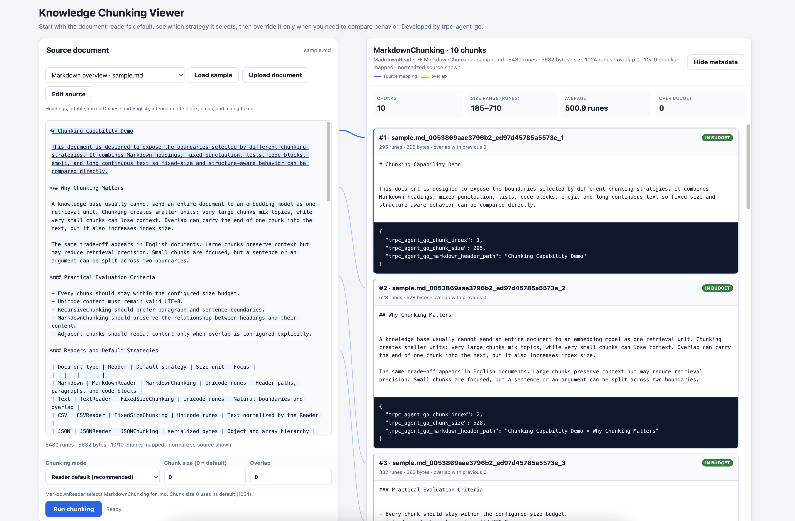

文档源配置

示例代码 : examples/knowledge/sources
源模块提供了多种文档源类型，每种类型都支持丰富的配置选项。
支持的文档源类型
源类型
说明
示例
文件源 (file) 单个文件处理
示例
目录源 (dir) 批量处理目录
示例
仓库源 (repo) Git 仓库 / 本地仓库目录
AST 示例
URL 源 (url) 从网页获取内容
示例
自动源 (auto) 智能识别类型
示例
文件源 (File Source)
单个文件处理，支持 .txt, .md, .json, .doc, .csv 等等格式：
import (
filesource "trpc.group/trpc-go/trpc-agent-go/knowledge/source/file"
)
fileSrc := filesource . New (
[] string { "./data/llm.md" },
filesource . WithChunkSize ( 1000 ), // 分块大小
filesource . WithChunkOverlap ( 200 ), // 分块重叠
filesource . WithName ( "LLM Doc" ),
filesource . WithMetadataValue ( "type" , "documentation" ),
)
目录源 (Directory Source)
批量处理目录，支持递归和过滤：
import (
dirsource "trpc.group/trpc-go/trpc-agent-go/knowledge/source/dir"
)
dirSrc := dirsource . New (
[] string { "./docs" },
dirsource . WithRecursive ( true ), // 递归处理子目录
dirsource . WithFileExtensions ([] string { ".md" , ".txt" }), // 文件扩展名过滤
dirsource . WithChunkSize ( 800 ),
dirsource . WithName ( "Documentation" ),
)
URL 源 (URL Source)
从网页和 API 获取内容：
import (
urlsource "trpc.group/trpc-go/trpc-agent-go/knowledge/source/url"
)
urlSrc := urlsource . New (
[] string { "https://en.wikipedia.org/wiki/Artificial_intelligence" },
urlsource . WithChunkSize ( 1000 ),
urlsource . WithChunkOverlap ( 200 ),
urlsource . WithName ( "Web Content" ),
)
URL 源高级配置
分离内容获取和文档标识：
import (
urlsource "trpc.group/trpc-go/trpc-agent-go/knowledge/source/url"
)
urlSrcAlias := urlsource . New (
[] string { "https://trpc-go.com/docs/api.md" }, // 标识符 URL（用于文档 ID 和元数据）
urlsource . WithContentFetchingURL ([] string { "https://github.com/trpc-group/trpc-go/raw/main/docs/api.md" }), // 实际内容获取 URL
urlsource . WithName ( "TRPC API Docs" ),
urlsource . WithMetadataValue ( "source" , "github" ),
)
注意 ：使用 WithContentFetchingURL 时，标识符 URL 应保留获取内容的URL的文件信息，比如：
- 正确：标识符 URL 为 https://trpc-go.com/docs/api.md，获取 URL 为 https://github.com/.../docs/api.md
- 错误：标识符 URL 为 https://trpc-go.com，会丢失文档路径信息
自动源 (Auto Source)
智能识别类型，自动选择处理器：
import (
autosource "trpc.group/trpc-go/trpc-agent-go/knowledge/source/auto"
)
autoSrc := autosource . New (
[] string {
"Cloud computing provides on-demand access to computing resources." ,
"https://docs.example.com/api" ,
"./config.yaml" ,
},
autosource . WithName ( "Mixed Sources" ),
autosource . WithChunkSize ( 1000 ),
)
仓库源 (Repo Source)
仓库源面向代码仓库场景：把一个 Git 仓库（或本地 checkout 目录）整体 ingest 进知识库，按文件类型分发到对应 reader，对 .go / .py / .proto 等做 AST 语义切块。它是「代码知识库 / Code RAG」的数据入口。
import (
_ "trpc.group/trpc-go/trpc-agent-go/knowledge/document/reader/golang"
_ "trpc.group/trpc-go/trpc-agent-go/knowledge/document/reader/python"
reposource "trpc.group/trpc-go/trpc-agent-go/knowledge/source/repo"
)
repoSrc := reposource . New (
reposource . WithRepository ( reposource . Repository {
URL : "https://github.com/trpc-group/trpc-go" ,
Branch : "main" ,
}),
reposource . WithFileExtensions ([] string { ".go" , ".py" , ".md" }),
)
仓库源的完整摄取配置（Repository 结构、版本与扫描控制、metadata、AST 解析效果），以及配套的代码检索工具（code_search 向量检索 / code_graph_* 图检索），详见 代码知识库与检索（Code RAG） 。
组合使用
import (
"trpc.group/trpc-go/trpc-agent-go/knowledge"
openaiembedder "trpc.group/trpc-go/trpc-agent-go/knowledge/embedder/openai"
"trpc.group/trpc-go/trpc-agent-go/knowledge/source"
filesource "trpc.group/trpc-go/trpc-agent-go/knowledge/source/file"
dirsource "trpc.group/trpc-go/trpc-agent-go/knowledge/source/dir"
urlsource "trpc.group/trpc-go/trpc-agent-go/knowledge/source/url"
autosource "trpc.group/trpc-go/trpc-agent-go/knowledge/source/auto"
vectorinmemory "trpc.group/trpc-go/trpc-agent-go/knowledge/vectorstore/inmemory"
)
// 组合多种源
sources := [] source . Source { fileSrc , dirSrc , urlSrc , autoSrc }
embedder := openaiembedder . New ( openaiembedder . WithModel ( "text-embedding-3-small" ))
vectorStore := vectorinmemory . New ()
// 传递给 Knowledge
kb := knowledge . New (
knowledge . WithEmbedder ( embedder ),
knowledge . WithVectorStore ( vectorStore ),
knowledge . WithSources ( sources ),
)
// 加载所有源
if err := kb . Load ( ctx ); err != nil {
log . Fatalf ( "Failed to load knowledge base: %v" , err )
}
配置元数据
为了使过滤器功能正常工作，建议在创建文档源时添加丰富的元数据。
详细的过滤器使用指南，请参考 过滤器文档 。
sources := [] source . Source {
// 文件源配置元数据
filesource . New (
[] string { "./docs/api.md" },
filesource . WithName ( "API Documentation" ),
filesource . WithMetadataValue ( "category" , "documentation" ),
filesource . WithMetadataValue ( "topic" , "api" ),
filesource . WithMetadataValue ( "service_type" , "gateway" ),
filesource . WithMetadataValue ( "protocol" , "trpc-go" ),
filesource . WithMetadataValue ( "version" , "v1.0" ),
),
// 目录源配置元数据
dirsource . New (
[] string { "./tutorials" },
dirsource . WithName ( "Tutorials" ),
dirsource . WithMetadataValue ( "category" , "tutorial" ),
dirsource . WithMetadataValue ( "difficulty" , "beginner" ),
dirsource . WithMetadataValue ( "topic" , "programming" ),
),
// URL 源配置元数据
urlsource . New (
[] string { "https://example.com/wiki/rpc" },
urlsource . WithName ( "RPC Wiki" ),
urlsource . WithMetadataValue ( "category" , "encyclopedia" ),
urlsource . WithMetadataValue ( "source_type" , "web" ),
urlsource . WithMetadataValue ( "topic" , "rpc" ),
urlsource . WithMetadataValue ( "language" , "zh" ),
),
}
分块策略 (Chunking Strategy)
示例代码 : 交互式 Chunking Viewer | fixed-chunking | recursive-chunking
分块（Chunking）是将长文档拆分为较小片段的过程，这对于向量检索至关重要。框架提供了多种内置分块策略，同时支持自定义分块策略。
内置分块策略
策略
说明
适用场景
FixedSizeChunking 限制大小，并优先选择附近的自然边界
通用文本，简单快速
RecursiveChunking 按分隔符层级递归拆分并合并小片段
保持语义完整性
MarkdownChunking 按 Markdown 结构分块
Markdown 文档（默认）
JSONChunking 按 JSON 结构分块
JSON 文件（默认）
默认行为
多数应用只需要配置 Source 或 Reader，不需要直接创建 Chunking
Strategy。Reader 会按文档类型选择默认行为：
文档类型
Reader 默认行为
.md、.markdownMarkdownChunking（标题层级 H1→H6→段落→自然文本边界）
.jsonJSONChunking（JSON 结构）
.txt、.text使用自然文本边界的 FixedSizeChunking
.csv保留完整行的 FixedSizeChunking；仅当单条记录超过当前新正文预算时拆分
.pdf、.doc、.docx导入可选格式 Reader 后使用 FixedSizeChunking
.protoProtoReader 按 AST 实体分块
.go、.py导入可选语言 Reader 后按 AST 实体分块；未导入时 Source 回退到 TextReader
如果普通文本需要按分隔符层级处理，可以显式使用 RecursiveChunking
作为自定义策略。
PDF、DOCX、Go 和 Python Reader 都是按需导入的包。应用需要显式导入所需
Reader，让它注册到 Reader registry。
默认参数 ：
参数
默认值
说明
ChunkSize
1024
FixedSizeChunking、RecursiveChunking、MarkdownChunking 的最大 Unicode rune 数
JSON ChunkSize
2000
JSONChunking 序列化后的最大字节数
Overlap
0
相邻分块之间的最大 Unicode rune 数
overlap 仅对 FixedSizeChunking、RecursiveChunking、MarkdownChunking 生效。它表示上限：策略可以把 overlap 起点移动到自然边界，也可以缩小实际 overlap，以保证最终分块不超过 chunkSize。较大的 overlap 会压缩新正文的空间，因此产生更多 chunk。JSONChunking 不支持 overlap。
Overlap 是前一个 chunk 尾部与后一个 chunk 头部共享的内容，并不是在单个
chunk 的头尾分别追加一段重叠内容。
文本策略的隐式 overlap 默认值从 128 改为 0。没有显式配置 overlap
的已有知识库会受到影响，其 chunk 边界和 embedding 输入都会变化。如果仍需
重叠窗口，请通过 WithChunkOverlap 或对应策略的 overlap option 显式配置
所需值，然后重新导入受影响的文档。由于 overlap 现在计入 chunkSize，
即使显式配置为 128，也不一定能逐字节复现旧的超预算 chunk。
FixedSizeChunking、RecursiveChunking 和 MarkdownChunking 默认保留源文本
每行首尾的空格与 Tab，避免破坏 Python、YAML、Makefile、Markdown 嵌套结构
以及 fenced code 的缩进。策略仍会统一文本编码和 CRLF/CR 换行，并拒绝
只包含空白字符的文档。所有输出 chunk 都至少包含一个非空白字符，并且在计入
配置的 overlap 后不超过 chunkSize。纯空白片段会在当前预算允许时附着到相邻
有效内容；如果首尾空白或超长空白无法在不产生纯空白、超预算 chunk 的前提下
附着，则会被丢弃。
这是项目明确采用的默认行为变更。相较于逐行裁剪空白的旧版本，它会改变 chunk
正文、边界、metadata 大小和 embedding 输入。升级后应清理持久化向量数据并
重新导入，不能混用两种行为生成的索引。对于必须保留旧有损规范化结果的应用，
必要的 opt-in 兼容模式仍然保留，可使用对应选项构造自定义策略：
fixed := chunking . NewFixedSizeChunking (
chunking . WithWhitespaceTrimming (),
)
recursive := chunking . NewRecursiveChunking (
chunking . WithRecursiveWhitespaceTrimming (),
)
markdown := chunking . NewMarkdownChunking (
chunking . WithMarkdownWhitespaceTrimming (),
)
通过 WithCustomChunkingStrategy 传入实际使用的策略。每个兼容选项都会按
旧版本行为裁剪整个文档、每一行和保留的 chunk 边界。
文本分块策略会在调用 Chunk 时校验配置：chunkSize 必须大于 0，
overlap 必须位于 [0, chunkSize)。无效配置会返回
ErrInvalidChunkSize、ErrInvalidOverlap 或 ErrOverlapTooLarge，而不是
静默调整参数。
JSONChunking 会按确定顺序遍历对象字段，并按数值顺序遍历数组索引。当
字符串值连同 JSON path 无法放入一个分块时，策略会在 UTF-8 安全边界上
继续拆分。如果不可拆分的值连同路径仍然无法放入 byte 预算，chunking 会
返回错误，而不是输出 over-budget chunk。
可通过 WithChunkSize 和 WithChunkOverlap 调整默认策略的参数：
fileSrc := filesource . New (
[] string { "./data/document.txt" },
filesource . WithChunkSize ( 512 ), // 最大 Unicode rune 数
filesource . WithChunkOverlap ( 64 ), // 最大重叠 Unicode rune 数
)
自定义分块策略
使用 WithCustomChunkingStrategy 可覆盖默认分块策略。
注意 ：自定义分块策略会完全覆盖 WithChunkSize 和 WithChunkOverlap 的配置，分块参数需在自定义策略内部设置。
FixedSizeChunking - 固定大小分块
在大小上限附近切分，并优先选择附近的换行、句子、标点或单词边界，同时支持 overlap：
import (
"trpc.group/trpc-go/trpc-agent-go/knowledge/chunking"
filesource "trpc.group/trpc-go/trpc-agent-go/knowledge/source/file"
)
// 创建固定大小分块策略
fixedChunking := chunking . NewFixedSizeChunking (
chunking . WithChunkSize ( 512 ), // 每块最大 512 个 Unicode rune
chunking . WithOverlap ( 64 ), // 最大重叠 64 个 Unicode rune
)
fileSrc := filesource . New (
[] string { "./data/document.md" },
filesource . WithCustomChunkingStrategy ( fixedChunking ),
)
当输入中的每一行都是一条逻辑记录时，可以配置
chunking.WithPreserveLines()。能够放入当前新正文预算的完整行不会被
拆开；单行自身超预算时，才继续按句子、标点、空白和 UTF-8 安全的 rune
边界切分。CSVReader 默认启用这个选项。
RecursiveChunking - 递归分块
按分隔符层级递归拆分，尽量在自然边界处分割：
import (
"trpc.group/trpc-go/trpc-agent-go/knowledge/chunking"
filesource "trpc.group/trpc-go/trpc-agent-go/knowledge/source/file"
)
// 创建递归分块策略
recursiveChunking := chunking . NewRecursiveChunking (
chunking . WithRecursiveChunkSize ( 512 ), // 最大块大小
chunking . WithRecursiveOverlap ( 64 ), // 块间重叠
// 自定义分隔符优先级（可选）
chunking . WithRecursiveSeparators ([] string { "\n\n" , "\n" , ". " , " " }),
)
fileSrc := filesource . New (
[] string { "./data/article.txt" },
filesource . WithCustomChunkingStrategy ( recursiveChunking ),
)
分隔符优先级说明 ：
\n\n - 优先按段落分割\n - 其次按行分割. - 再按句子分割
递归分块会尝试使用更高优先级的分隔符，仅当分块仍超过最大大小时才使用下一级分隔符。若所有分隔符都无法将文本切分到 chunkSize 以内，则按 chunkSize 强制切分。
对于同一个超长逻辑块，内置文本策略会对小于一半 chunk budget 的尾块
进行重平衡。普通文本优先选择附近的自然边界；Markdown 长段落优先按
句子和标点，长表格与 fenced code block 优先按完整行切分；连续 token
找不到自然边界时，才回退到 UTF-8 安全的 rune 边界。重平衡不会跨越
Markdown 标题作用域或无关的结构化记录，因此语义完整的短章节仍可能
保留为较小的 chunk。
示例代码 : examples/knowledge/features/transform
Transformer 用于在文档分块（Chunking）前后对内容进行预处理和后处理。这对于清理从 PDF、网页等来源提取的文本特别有用，可以去除多余的空白字符、重复字符等噪声。
处理流程
内置转换器
CharFilter - 字符过滤器
移除指定的字符或字符串：
import "trpc.group/trpc-go/trpc-agent-go/knowledge/transform"
// 移除换行符和制表符
filter := transform . NewCharFilter ( "\n" , "\t" , "\r" )
CharDedup - 字符去重器
将连续重复的字符或字符串合并为单个：
import "trpc.group/trpc-go/trpc-agent-go/knowledge/transform"
// 将多个连续空格合并为单个空格，多个换行合并为单个换行
dedup := transform . NewCharDedup ( " " , "\n" )
// 示例：
// 输入: "hello world\n\n\nfoo"
// 输出: "hello world\nfoo"
使用方式
Transformer 通过 WithTransformers 选项传递给各类文档源：
import (
filesource "trpc.group/trpc-go/trpc-agent-go/knowledge/source/file"
dirsource "trpc.group/trpc-go/trpc-agent-go/knowledge/source/dir"
urlsource "trpc.group/trpc-go/trpc-agent-go/knowledge/source/url"
autosource "trpc.group/trpc-go/trpc-agent-go/knowledge/source/auto"
"trpc.group/trpc-go/trpc-agent-go/knowledge/transform"
)
// 创建转换器
filter := transform . NewCharFilter ( "\t" ) // 移除制表符
dedup := transform . NewCharDedup ( " " , "\n" ) // 合并连续空格和换行
// 文件源使用转换器
fileSrc := filesource . New (
[] string { "./data/document.pdf" },
filesource . WithTransformers ( filter , dedup ),
)
// 目录源使用转换器
dirSrc := dirsource . New (
[] string { "./docs" },
dirsource . WithTransformers ( filter , dedup ),
)
// URL 源使用转换器
urlSrc := urlsource . New (
[] string { "https://example.com/article" },
urlsource . WithTransformers ( filter , dedup ),
)
// 自动源使用转换器
autoSrc := autosource . New (
[] string { "./mixed-content" },
autosource . WithTransformers ( filter , dedup ),
)
组合多个转换器
多个转换器按顺序依次执行：
// 先移除制表符，再合并连续空格
filter := transform . NewCharFilter ( "\t" )
dedup := transform . NewCharDedup ( " " )
src := filesource . New (
[] string { "./data/messy.txt" },
filesource . WithTransformers ( filter , dedup ), // 按顺序执行
)
PDF 文件支持
由于 PDF reader 依赖第三方库，为避免主模块引入不必要的依赖，PDF reader 采用独立 go.mod 管理。
如需支持 PDF 文件读取，需在代码中手动引入 PDF reader 包进行注册：
import (
// 引入 PDF reader 以支持 .pdf 文件解析
_ "trpc.group/trpc-go/trpc-agent-go/knowledge/document/reader/pdf"
)
注意 ：其他格式（.txt/.md/.csv/.json 等）的 reader 已自动注册，无需手动引入。
2026-08-07 07:48:23
2026-01-08 11:46:52